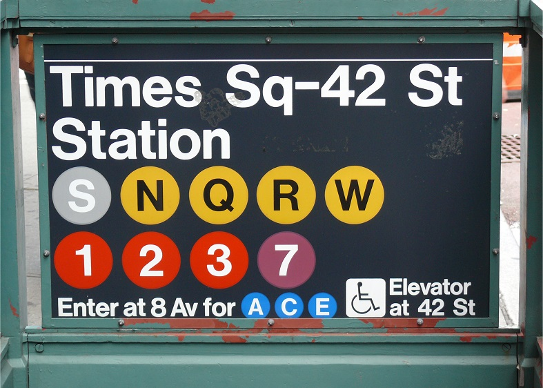

Fun facts to know about the subway in NYC
The NYC MTA has the most subway stations in the world, with 472 stations. It has 229 miles of subway track, which gives the
MTA the fifth longest amount of subway tracks in the world, after London, Beijing, Shanghai, and Seoul.
The A train track, which travels between 207th Street in Upper Manhattan to Far Rockaway in Queens, is
31 miles long and is the longest subway line in the NYC MTA.
The busiest subway station is Times Square - 42nd Street.